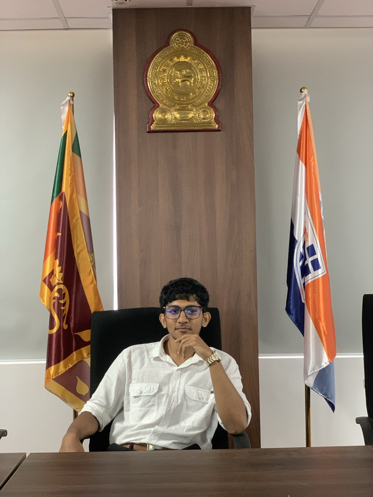

Radawa Laknath
Biotechnologist | Research Enthusiast

About Me
I am an enthusiastic Biotechnology graduate with strong academic and research experience in molecular biology, bioinformatics, and analytical laboratory techniques.
I am passionate about applying biotechnology to healthcare, agriculture, and environmental sustainability, aiming to contribute to innovative research that creates real-world impact.
Educational Qualifications
- B.Sc. (Hons) in Biotechnology – SLIIT, Sri Lanka (Graduated: 2025 | First Class Honours)
- G.C.E. Advanced Level (A/L) – Badulla Central College | Biology (S), Physics (C), Chemistry (C)
- G.C.E. Ordinary Level (O/L) – Badulla Central College
Work Experience
- Intern – IBMBB, University of Colombo
Assisted in molecular biology and biochemistry experiments, conducted data analysis, and prepared reports to support ongoing research projects.
Other Professional Qualifications
- Secretary – Biotechnology Student’s Club, SLIIT
Projects
- Laboratory projects involving PCR, gel electrophoresis, ELISA, spectrophotometry, SDS-PAGE, and Western blotting.
- Applied bioinformatics tools for sequence analysis and data interpretation.
Skills
- Project Management
- Bioinformatics Knowledge
- Teamwork & Leadership
- Time Management
- Critical Thinking
- Effective Communication
Achievements
- Graduated with First Class Honours in Biotechnology
Hobbies
- Reading biotechnology research articles
- Exploring new technologies in life sciences
- Volunteering in academic events
- Outdoor activities and fitness